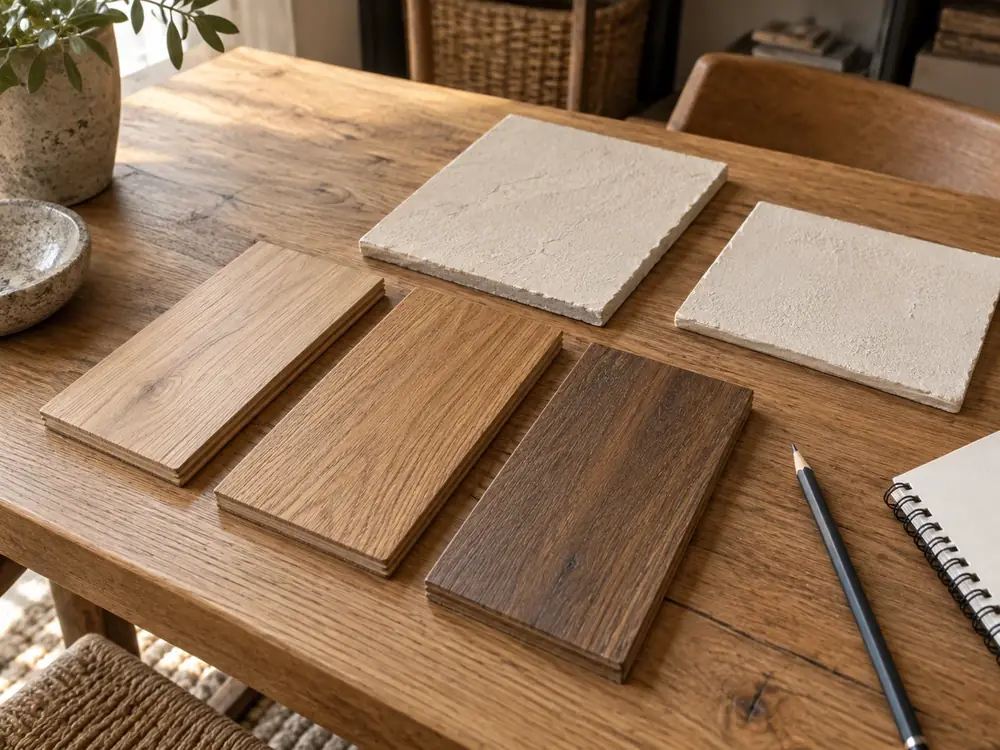
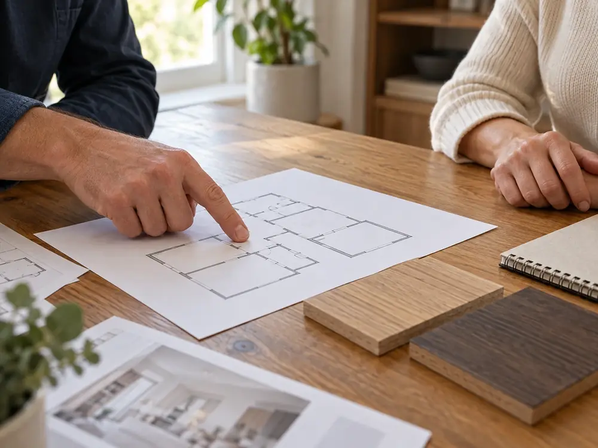
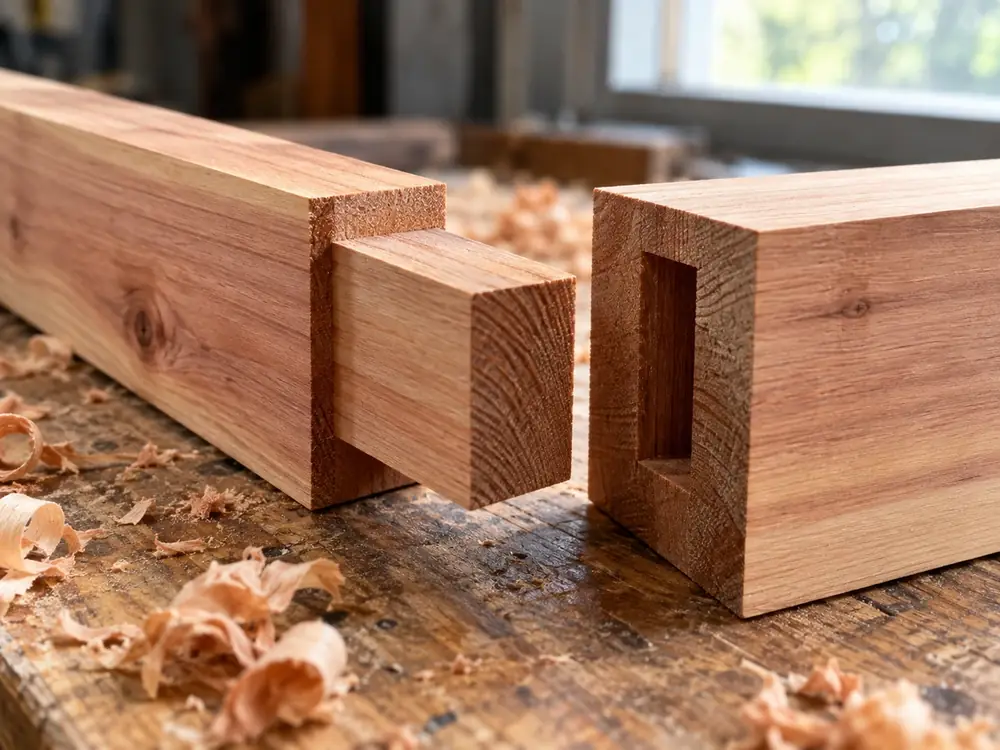

灯町の工務店新築・リフォーム・小さな修繕
段取りが見えると、
家づくりは怖くない。
木の軸組の家を、相談から点検まで同じ会社で。何を、いつ決めて、いつ払うかを先にお見せします。
費用の目安（税込）
- 新築
- 2,800万円〜延床30坪の例・土地代別
- リフォーム
- 50万円〜
- 小さな修繕
- 1万円〜
相談だけでも無料です。追加の費用が出るのは、4つの場合だけです。
新築の十の段取り段階ごとに決めることを見る
- 一相談
- 二現地調査
- 三プラン
- 四見積もり
- 五契約金額が決まる10%
- 六着工30%
- 七上棟30%
- 八完成
- 九引き渡し30%
- 十点検
％は、工事費を4回に分けて払うときの割合です。
頼めること
新築から、建具ひとつの調整まで。
大きな工事も小さな修繕も、同じ大工と現場監督が受け持ちます。ここまで含みます、という範囲を先にお見せします。
| 頼めること | ここまで含みます | 期間の目安 |
|---|---|---|
| 新築木造軸組の家 | 設計・確認申請などの手続き・基礎から仕上げまで・玄関まわりの外構 | 相談から約8〜10か月 |
| リフォーム水回り・内装・外壁 | 床下と屋根裏の点検・プランと見積もり・解体と施工・廃材の処分 | 約2週間〜3か月 |
| 小さな修繕建具・雨漏りの点検 | 訪問・点検・その場でできる調整。ほかの会社が建てた家も伺います | 1日〜 |
伺える範囲灯町の作業場から車で30分ほど。灯町・杉沢町（約20分）・北灯市（約25分）・港見町（約30分）です。
できることと含まないものを見る

三・四プランと見積もり
見積もりは、項目ごとに。
「一式」にはしません。どこを変えるといくら変わるかが見え、ほかの会社の見積もりとも項目を並べて比べられます。
- プランの打ち合わせ
- 2〜3回
- 見積もりが出るまで
- 約2週間
- 金額が決まるのは
- 五の契約のとき


六・七着工と上棟
柱と梁は、作業場で刻んでおきます。
継手（つぎて）は、木と木をつなぐための刻みです。自社の大工が灯町の作業場で刻み、上棟の日に現場で組み上げます。
- 基礎
- 約1か月
- 上棟（柱・梁・棟木を組む）
- 1〜2日
- 屋根・壁・内装の仕上げ
- 約3か月

十引き渡しのあと
建てたあとも、同じ顔ぶれで。
図面を描いた人、刻んだ大工、点検に伺う人が同じ会社です。窓口は引き渡しのあとも変わりません。
- 引き渡し説明書と図面一式
- 1年目建具・設備の調整
- 5年目外壁・屋根・床下
- 10年目構造・雨漏り
点検の費用はかかりません。
問よくある質問
相談の前に、よく聞かれること。
質問は、段取りの番号の順に並べています。
一 相談新築かリフォームか、まだ決めていません。
決めていなくて大丈夫です。今の家の状態と予算をうかがい、両方の費用と期間を並べてお見せします。相談だけで終わっても費用はかかりません。
四 見積もり契約のあとで、金額が上がることはありますか？
上がるのは、ご希望で仕様を変えたときと、解体して初めて分かる傷み（リフォーム）が見つかったときなどです。どれも工事の前に金額をお伝えし、了承をいただいてから進めます。
六 工事中工事中に、現場を見に行けますか？
いつでも見学できます。安全のため、前日までにお知らせください。週に一度、その週の工事の内容と写真もお送りします。
十 引き渡し後ほかの会社が建てた家の修繕も頼めますか？
対応します。図面があれば、ご用意ください。まずは訪問と点検で傷みを確かめ、直す場合の金額を先にお伝えします。